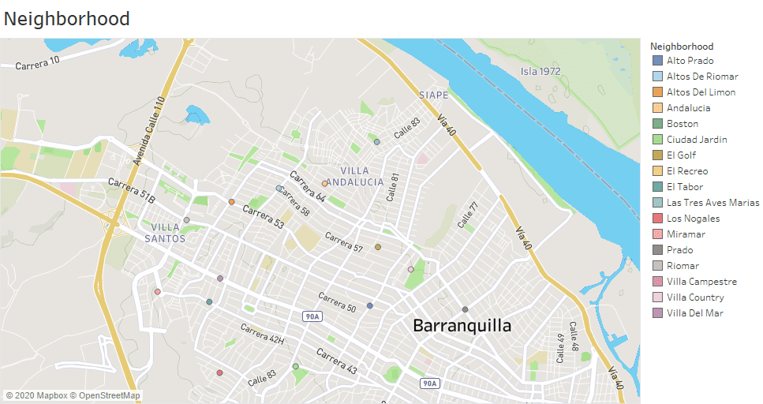
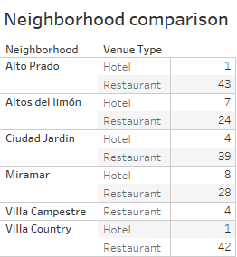
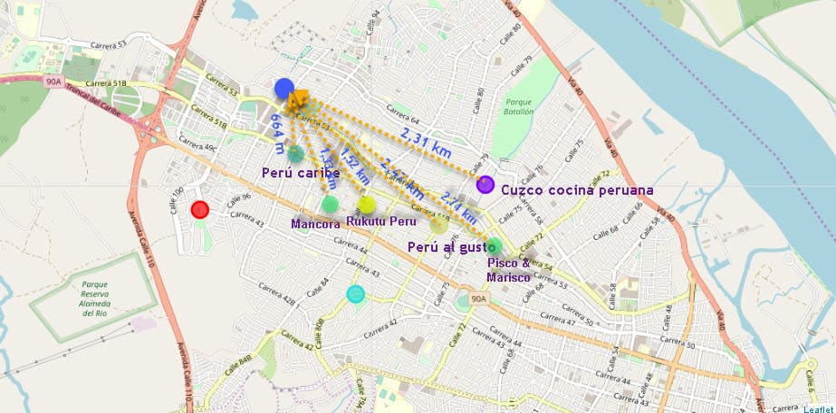

- 1 Jul, 2020
- read
INTRODUCTION
Problem
According to economic projections regarding Peruvian restaurants in Colombia, they are expected to exceed sales of 62 million dollars by 2019. Until 2018, 81 Peruvian food points were registered in the country, 33 were in Bogota and 29 in Medellin, the rest in other regions.
A Peruvian restaurant franchise has decided to start a new plaza in the city of Barranquilla, among its reasons is: its geographical position is strategic thanks to the reopening of the Magdalena River and for being one of the epicenters in terms of business in Colombia. The central objective of this research study is to analyze and select the best locations in the city of Barranquilla, Colombia, for the franchise of Peruvian restaurants to open their local with the best location in the city, for this, this research will rely on methodologies of data science and automatic learning techniques such as data aggregation. In that sense, the present project uses many skills in data science, working with API (Foursquare), data cleaning, data containment, machine learning (K-means grouping) and map visualization (Folium, Tableau).
Knowing the above, the following aspects are crucial to consider strategic points for the opening of the new Peruvian restaurant franchise
- Proximity and ease for customers.
- There is no presence of the competition at least with a radius of 1 km away.
- It is surrounded by companies from different economic sectors.
- It is surrounded by companies from different economic sectors.
- The proximity to places of high traffic flow, through main roads.
Interest
The main interested parties in this project can be any investor who is thinking of opening a new Peruvian food restaurant in the city and also for Big Data students who want to expand their knowledge and be able to carry out similar projects.
DATA
Data sources
It is crucial to have a good source of data, for this reason, it has been determined that the following data are needed for this project:
- List / Information of the sectors of Barranquilla with their Geodata (latitude and longitude).
- List / Information about the main roads of Barranquilla with their Geodata.
Data cleansing
The data we will use for this analysis is a combination of a CSV file that has been prepared for multi-source analysis (Barrios_coord.csv) and the location information using the Foursquare platform.
In the same way, it is worth noting that the files will be read in Jupyter's notebook, pandas will be used alternately to display the csvs converted into DataFrame, some Python and Tableau data visualization libraries.
NOTE: In the source code of this project you can see that for map visualization, the Python library called Nominatim was implemented to determine the geodata. The coding of the actual algorithm can be shown in 'markdown', if you execute the code, please note that this will take some time to display.
Exploratory data analysis
For this research, 16 strategic and commercially active neighborhoods in the city of Barranquilla were taken into account with their respective geographical locations generated manually with the help of Google Maps (See Figure 1) and with data provided by the DANE (Departamento Administrativo Nacional de Estadística, by its Spanish acronym). The latter happened because it was not possible to find in Wikipedia the list of neighborhoods in the city of Barranquilla with their geodata. Below is an example of the table generated by the information obtained.

Then the most common places by neighborhood will be examined through Foursquare's API (See Figure 2). The reader is reminded that Foursquare has one of the largest databases of over 105 million places and is used by over 125,000 developers. The Foursquare API will provide many categories of local data, and for the purposes of this project the category of Peruvian Restaurant will be studied to help solve the commercial problem at hand. When the data is grouped and classified by "the most common", it can be seen that Peruvian restaurants have a minimal participation in the city that, of course, could be analyzed as little presence of competitors. Being the restaurants in the category of Pizza and Middle Eastern food the ones that have a greater presence in the city:
In the same sense, with the objective of understanding and analyzing in greater depth the data of the 16 main neighborhoods that were chosen as a sample for the present study, 6 of them as a representative sample, among which are Miramar, Altos del Limón, Villa Country, Alto Prado, Villa Campestre and Ciudad Jardín. Each of these neighborhoods is then specified with the names of the 100 places in their respective category for further analysis.
On the other hand, in the Altos del Limón neighborhood, similar results can be seen to the Miramar neighborhood, a commercially very busy area where the food category is predominant, specifically pizza and ice cream. However, it is also important to highlight that it is a hotel zone and that within the 5 main places, only one place is a restaurant dedicated to offering Middle Eastern food services.
With respect to the Villa Country neighborhood, like the previous neighborhoods, pizza restaurants still predominate, however, something that differentiates the Villa Country neighborhood is the presence of Italian restaurants. It should be noted that it is also a high commercial area, but it is not a hotel area, unlike Miramar and Altos del Limón, which are.
Analyzing the graph of the Alto Prado neighborhood you can see the diversity of international food restaurants such as Italian and Middle Eastern. However, it is important to mention that pizza establishments still predominate in this area and also to highlight the high flow of hotels.
The Villa Campestre neighborhood is not a neighborhood, according to the data, with high flow and commercial diversity, there is no presence of hotels because this area is of family buildings. Due to its characteristic, this neighborhood will not be taken into account when defining the best location for the Peruvian restaurant to be opened in this project.
Finally, the Ciudad Jardin neighborhood, pizzerias and restaurants of Middle Eastern food predominate, in addition, it is emphasized that it is not an area with a great amount of hotels compared to other neighborhoods such as Miramar and Altos del Limón.
After this analysis, we proceeded to classify and group each of the 6 selected sectors of the city in order to verify the presence of Peruvian restaurants, since as can be seen

RECOMMENDATIONS
The 98th Street, between carreras 53-56, is having a great population growth (more and more buildings are being made in the sector), in addition it can be said that this sector has a great commercial influence in the city. At the present time there is no Peruvian food restaurant in the surroundings, the closest one is located at 644m, however, it is considered that you can still take advantage of the opportunity due to its strategic geographical position. As can be seen in figures 3, Altos del Limón is where the main hotels are present, as is Miramar, but it has few restaurants compared to other sectors. This also represents a great opportunity since many tourists will have more access to foreign food, especially Peruvian food.
CONCLUSION
The final result of this research study recommends the sector of Altos del Limón, on 98th Street with Carrera 56 for the reasons mentioned in the Recommendations section, and is considered the best option considering all factors: relatively high volume of activities for tourists and locals, it is a business center, it is close to other high rent neighborhoods and the proportion of hotels to restaurants is not very high and it is located on the main roads, this makes it easily accessible.
Adding the result of the distances obtained from the 6 places (See Figure 4): Peru Caribe (644 m), Mancora (1.33 km), Rukutu Peru Restaurant (1.52 km), Cuzco Cocina Peruana (2.31 km), Peru al gusto (2.47 km) and Pisco & Marisco (2.74 km) gives as a result that the average distance to the recommended place to open the new restaurant is 1.84 km, which is quite positive and meets the requirements set out at the beginning of this study.

It is important to point out that other neighborhoods considered were Alto Prado, Ciudad Jardín, Miramar, Villa Campestre and Villa Country, but since they did not meet most of the requirements, Altos de Limón was chosen as the best option and it was also fundamental to make the final decision on the distance between the competition. Finally, it is concluded that Barranquilla is not saturated with restaurants whose niche market is Peruvian food, only in the city there are 6 restaurants in this category.
ANNOUNCEMENTS
The graphics have been published in a dashboard through Tableau Public that you can find in the following link. Also, if you want to see similar projects along with the source code you can go to my portfolio. Finally, contact me through LinkedIn or Twitter. You can find the source code for this project in the following Github repository.